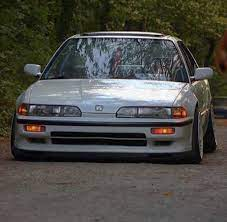
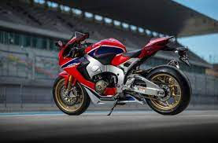
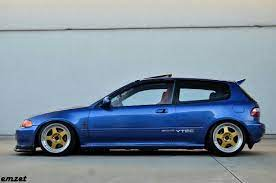

Encontrado en: Honda CR-V como B20Z2 (EE. UU.) Honda CR-V y Honda Orthia como B20Z Honda CR-V como B20Z2 (EE. UU.) Honda CR-V y Honda Orthia como B20Z Cilindrada: 1973 cc Potencia: 147 HP (110 kilovatios) @ 6200 rpm Par: 133 lb-ft (180 Nm) @ 5600 rpm Longitud biela: 137 mm (5,4 pulgadas) Compresión: 9.6:1 Diámetro x Carrera: 84 mm (3,31 pulgadas) x 89 mm (3,50 pulgadas) Línea roja: 6,800 rpm Con sensor de picado de biela Mecánica de alta compresión9.6:1
| Carros Emblematicos | Motos Emblematicas | Leyendas | |
|---|---|---|---|
|
 |  | |
| La sexta generación del Honda Civic tuvo los motores D16Y8 SOHC VTEC de 125 CV en el EJ8 y D16Y7 en el EJ6 (sin VTEC) de 105 CV ambas versiones cupé. En las versiones de tres puertas encontramos: los motores D15Z6 SOHC VTEC-E, que rinde 115 CV (EK3) y el D14A3/A4/Z2, que rinde 90 CV sin VTEC (EJ9). | Las CBR son una serie de motocicletas del fabricante japonés Honda. Originalmente con motores de cuatro cilindros en línea en varias cilindradas, a principios del siglo XXI se incorporaron motores monocilíndricos de baja cilindrada, y nuevos motores de dos cilindros en línea desde el año 2012. | El Honda Civic 1.6 Vti (EG6) cuenta con un motor delantro transversal cuatro cilindros en línea de aspiración natural que desarolla un par máximo de 150 Nm desde 7000 rpm y una potencia máxima de 160 CV a 7600 rpm transmitida a las ruedas delanteras de 15 pulgadas a través una transmisión manual de 5 velocidades. | |
| Cual te gusta mas? | Las Motocicletas o los vehiculos? | ||